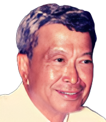

Son of Mariano Laurel and Gaspara
Remoquillo. He was the most prominent member of the Laurel clan at the turn of the 20th century. A lawyer and justice of the peace. He participated in the Philippine Revolution as a rebel under Generals Emilio Aguinaldo and Miguel Malvar.
Father of Jose P. Laurel
Jacoba Garcia
Wife of Sotero Laurel and the mother of Jose P.
Laurel and other 4 children.
Jose Paciano Laurel
1891 - 1959 - Filipino lawyer, politician, and jurist, who served as president of the Philippines (1943-45) during the Japanese occupation
during World War II.
Rosario Laurel
Sister of JPL.
Nieves Laurel
Sister of JPL
Maria Paz Laurel
Sister of JPL
Alberto Laurel
Brother of JPL
Paciencia Hidalgo
Wife of Jose P. Laurel. Former First Lady of the Philippines during the Japanese Sponsored Republic of Former President Jose Laurel.
Jose Bayani Junior
1st Son of JPL
Jose Sotero III
2nd Son of JPL
Natividad Laurel
1st Daughter of JPL
Sotero Cosme Laurel

3rd Son of JPL
Mariano Antonio Laurel
4th Son of JPL
Rosenda Paciencia Laurel
2nd Daughter of JPL
Potenciana Laurel
3rd Daughter of JPL
Salvador Roman Laurel
5th Son of JPL
Natividad Laurel
6th Son of JPL
About Us
The Laurel family continues to hold an important place in Philippine history and society. Their commitment to leadership, discipline, and public service reflects the core values of responsibility, loyalty, and governance that shaped Jose P. Laurel's leadership style and were passed on through generations. The Laurel family's dedication to nation-building, governance, and social initiatives showcases their commitment to the well-being of the Filipino people and their determination to contribute positively to the development of the nation. Their legacy is a testament to the impact of family influence, discipline, and service, playing a crucial role in the continued progress and stability of Philippine society.